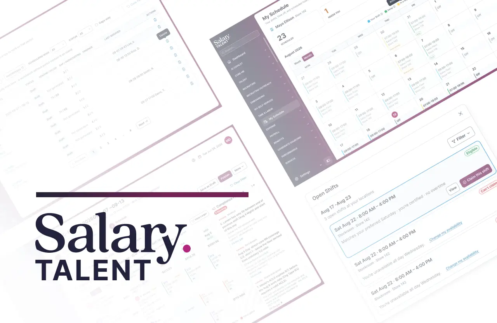
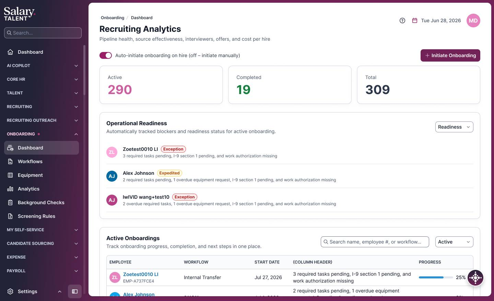
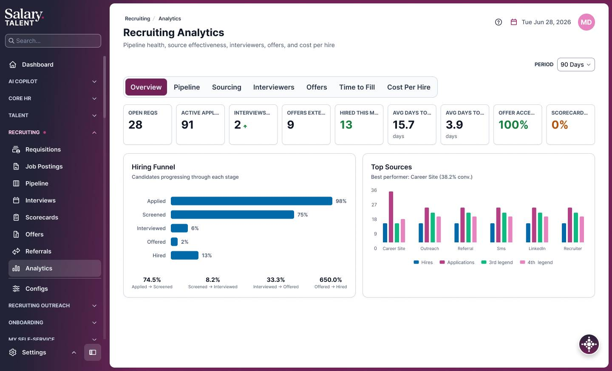
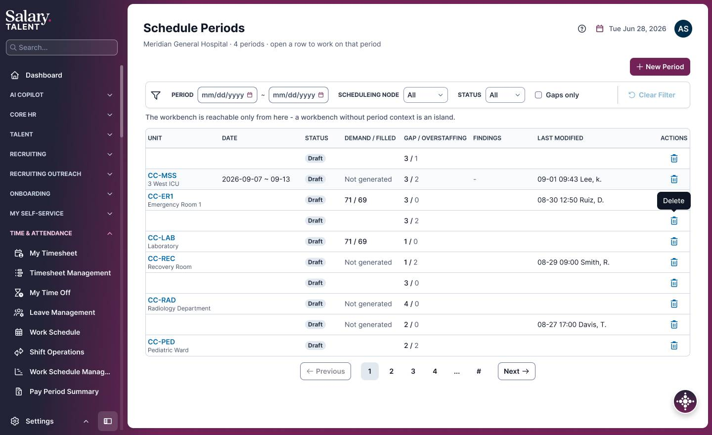
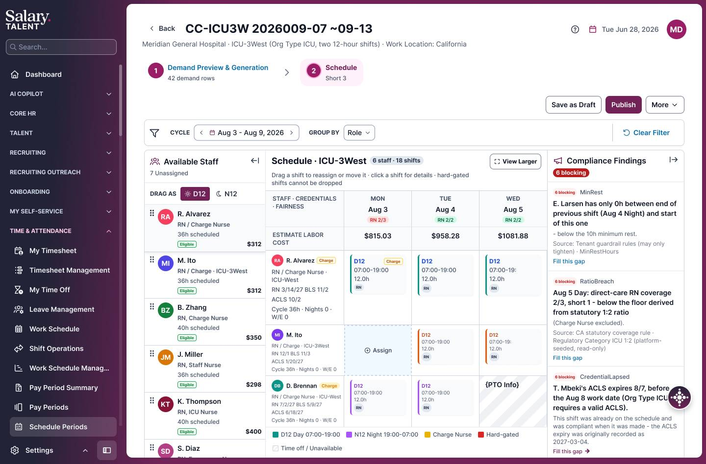
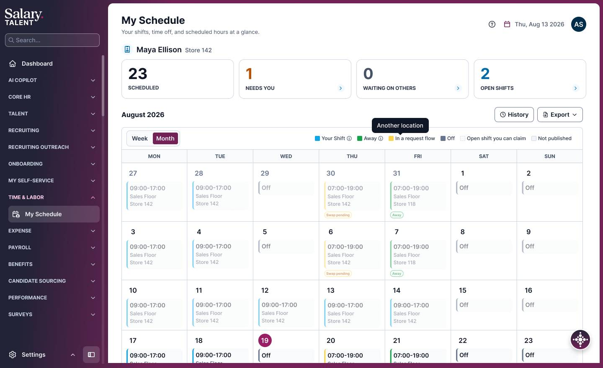
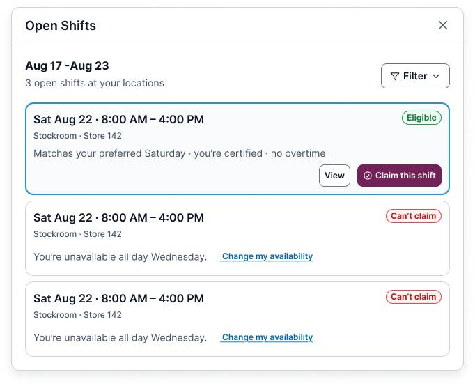

面向企业的智能人力资源管理系统，覆盖招聘、入职、考勤与智能排班等模块，并集合人力资源薪酬数据服务等内容，为用户提供一体化管理和数据分析。

在此补充项目背景、目标与你的角色。以下是产品核心界面示例。


化繁为简，将复杂排班收拢为一张智能易用的可视化排班工作台；适配多行业、多工种场景，主管只需通过直观的交互，即可快速为团队成员完成班次分配。
· 需求驱动排班 —— 根据客流、工作量等业务信号自动测算所需人力，按岗位与角色独立配比，人力缺口一目了然。
· 合规硬门禁 —— 将劳动法规与自定义规则分层固化，工时、休息、岗位资质等任何违规项都会被系统自动拦截并留痕，随时可出具合规依据。
· 多目标智能优化 —— 统筹成本、公平、合规与员工偏好等多重目标，一键生成均衡排班并自动补齐空缺；开放班次经校验后开放认领，员工可自助抢班或申请换班。
Smart Scheduling turns complex schedules into a hands-on workbench for retail, healthcare, F&B, manufacturing, and more — demand-driven headcount, compliance hard gates, and multi-objective optimization.



